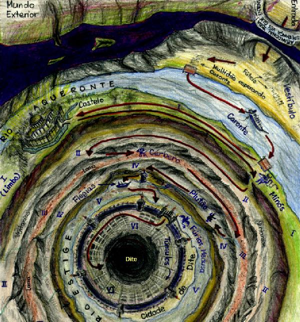

| 
INFERNO SUPERIOR (vestíbulo e círculos I a V): Limbo e morada dos que pecaram por incontinência
- Portal do Inferno: "... Abandonai todas as esperanças, vós que entrais!"
(Canto III)
- Ante-câmara (vestíbulo): Fúteis e indecisos - aqueles que não tomaram
partido do bem ou do mal (são rejeitados pelo Céu e Inferno). São torturados
por vermes e vespas por toda a eternidade (Canto
III).
- Rio Aqueronte: Rio que cerca o Inferno. A travessia (sem volta) é realizada
por Caronte - o barqueiro (Canto III).
- Círculo I (Limbo): Os que não pecaram, mas não foram batizados. Não
sofrem porém não têm esperanças (Canto IV).
- Minós: Juiz dos mortos. Monstro que se enrosca no próprio rabo
e despacha os pecadores às suas penas (Canto
V).
- Círculo II: Luxuriosos. São agitados dentro de turbilhões de vento
que nunca cessam (Canto V).
- Círculo III: Gulosos. Jazem submersos na lama onde são dilacerados
por Cérbero (Canto VI) e cortados pela chuva
eterna.
- Círculo IV: Avarentos e gastadores. Passam a eternidade empurrando
pedras uns contra os outros sem finalidade (Canto
VII).
- Círculo V e Rio Estige: Dominados pela ira e pelo rancor. Massacram
uns aos outros dentro do rio nojento (Canto VII)
ou gorgolam a lama no seu fundo..
- Cidade de Dite: a cidade da dor eterna, cercada pelo Estige,
protegida por diabos e fúrias. Flégias: barqueiro do Estige realiza
a travessia (Canto VIII).
Ilustração de Helder
da Rocha.
|